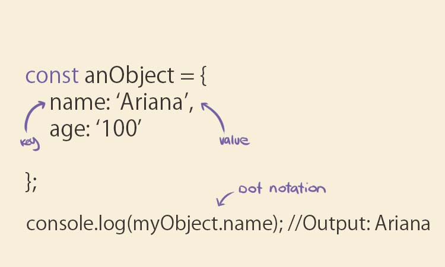

An analogy to describe JavaScript and its relationship to HTML and CSS.
JavaScript is like an employee in an office. It runs around in the background, doing everything that the boss, HTML desires, completing projects, moving paper and storing or retrieving things from the filing cabinet. CSS… well CSS is like the uniform for the office, the brand, the marketing. It looks pretty and attracts customers.
Explain control flow and loops using an example process from everyday life.
The best analogy I had for control flow and loops was to compare it to a river... Control flow is the order in which a computer executes code, it runs top to bottom, just like water in a river. However there are lots and lots of things in a river that can change the flow of the water like rocks, branches and river banks (loops, conditionals etc). Sometimes the water will get sucked behind a rock and form an eddie, whirling around and around until the water meets a certain condition that allows it to join the main flow of water and continue down stream.
Describe what the DOM is and an example of how you might interact with it.
Document Object Model is essentially a bridge between HTML and Javascript (or other languages). It has a specific system structure that maps out HTML files, often referred to as a tree. This system allows devs to access specific elements and other html objects through JS code, and manipulate those objects from a js document.
Explain the difference between accessing data from arrays and objects.
Arrays are accessed using bracket notation with the numerical index that represents the data. For example:
Objects are accessed using dot notation or bracket notation. For example:
Explain what functions are and why they are helpfu
Functions perform tasks and calculate values. They take an input and return an output when called. They are helpful because they can be used to create reusable sections of code.